Library / UI Components
24 keywords in this category, each one tested and explained in plain language.
Pick keywords as you browse, then press Copy for AI and paste into ChatGPT, Claude or any AI. Copy keywords gives a plain list for Midjourney or Seedance.
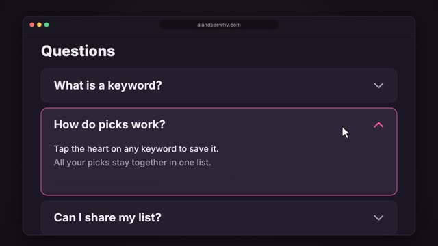
A stack of rows where clicking one opens it to show more text below, while its little arrow flips.
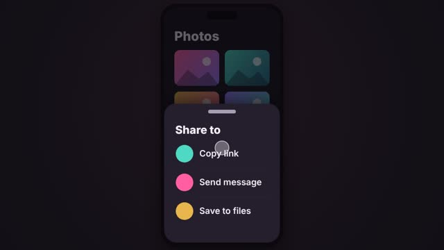
A panel that slides up from the bottom of a phone screen with a small grab handle on top.
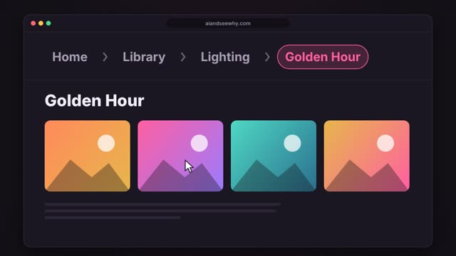
A trail of links at the top of a page, like Home > Library > Lighting, showing the path you took to get here.
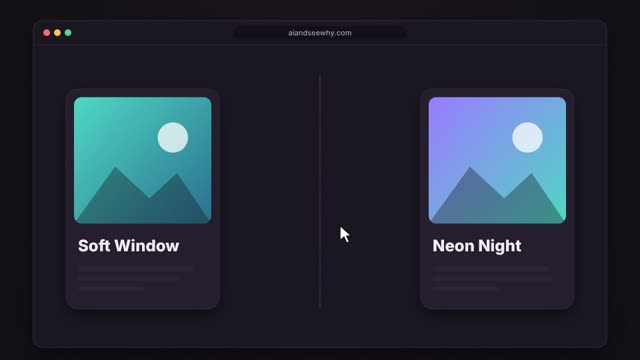
A card that turns over like a playing card when you click or hover, showing more information on its back.
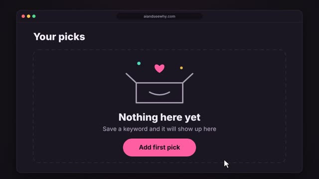
What a page shows when there is nothing in it yet: a friendly little drawing, a short message and a button to get started.
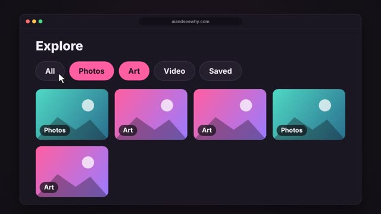
A row of small rounded buttons, called chips, that you tap to narrow down what is shown.
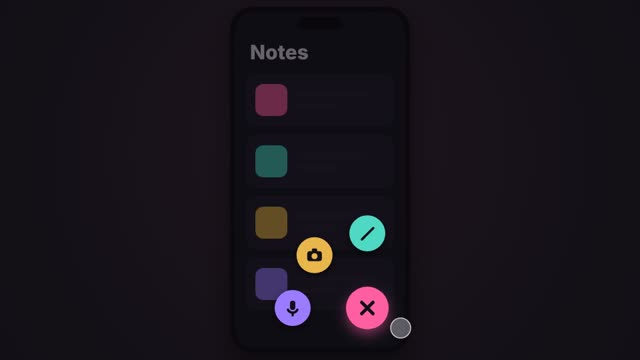
A round button that floats in the bottom corner of a phone screen for the main thing you do in the app, usually with a plus sign.
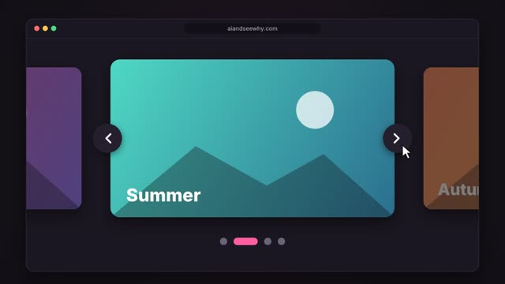
A row of big pictures that slides along one at a time, with dots underneath showing which one you are on.
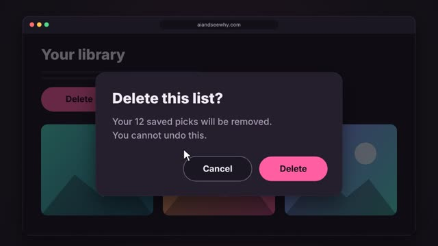
A box that pops up in the middle of the screen while the page behind it goes dark.
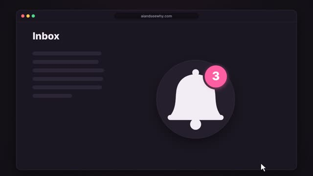
A small bright circle with a number that sits on the corner of an icon, like a bell, to show how many new things are waiting.
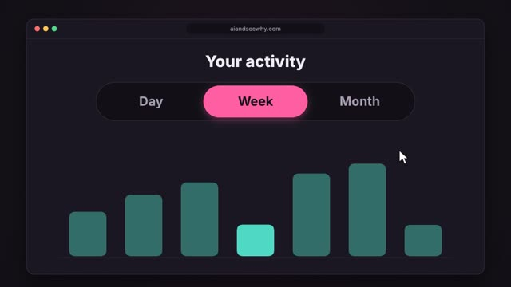
A pill split into a few side by side choices, with a coloured highlight that slides to the one you pick.
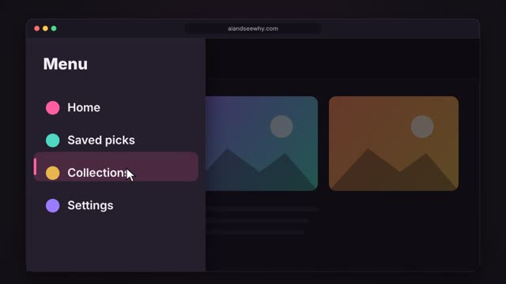
A menu panel that slides in from the edge of the screen when you click the three line menu icon.
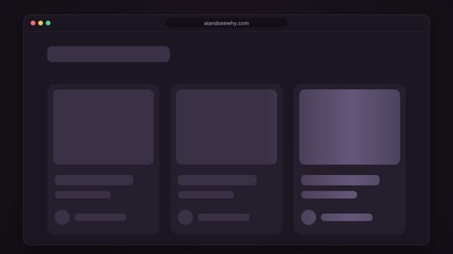
Soft grey blocks shaped like the page that show while content is still loading, with a gentle shine sweeping across.
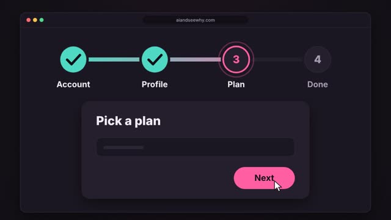
A row of numbered circles joined by a line that shows where you are in a process with several steps.
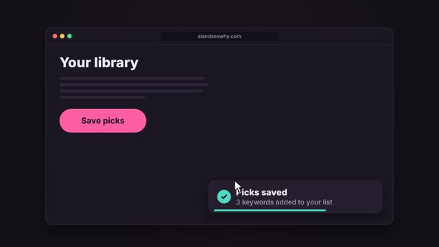
A small message card that slides in near the corner of the screen to say something happened, then slides away by itself.
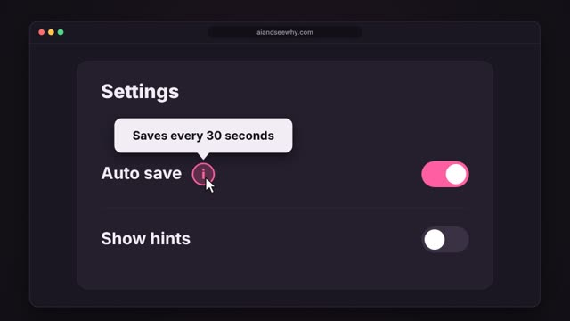
A small label with a pointer arrow that fades in above something when you hover the mouse over it.